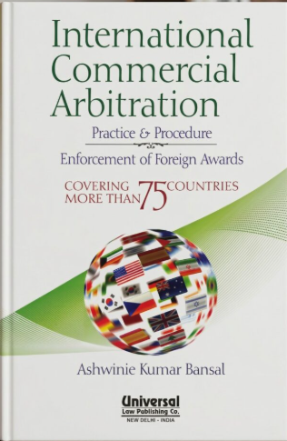
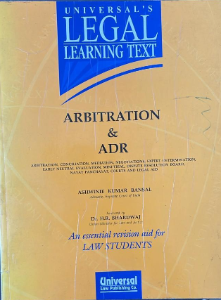
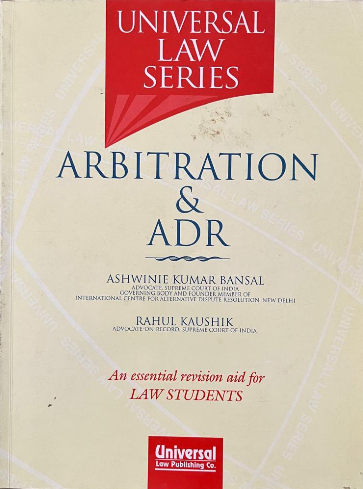
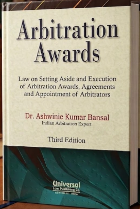
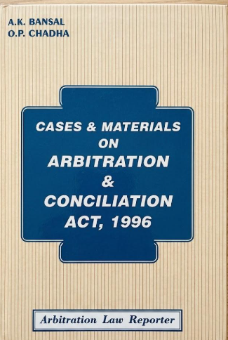
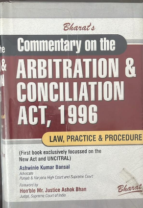
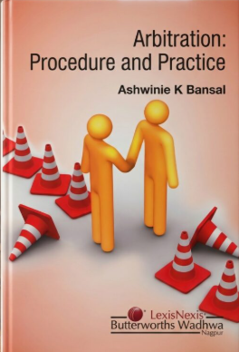
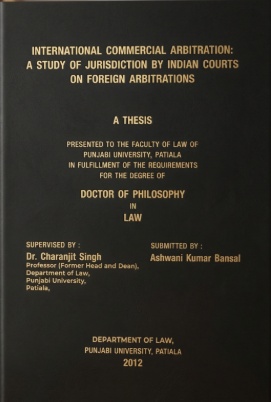

Selected publications
Books on arbitration and dispute resolution
Dr. Bansal has published eight books on Indian arbitration law. The supplied profile notes that his books are used as textbooks at UILS, Punjab University.

International Commercial Arbitration: Practice & Procedure
Enforcement of foreign awards; covering more than 75 countries.

Arbitration & ADR
Universal’s Legal Learning Text.

Arbitration & ADR
Universal Law Series.

Arbitration Awards
Law on setting aside and execution of arbitration awards.

Cases & Materials on Arbitration & Conciliation Act, 1996
Cases and materials on arbitration and conciliation.

Commentary on the Arbitration & Conciliation Act, 1996
Law, practice and procedure.

Arbitration: Procedure and Practice
Arbitration procedure and practice.

International Commercial Arbitration
Doctoral thesis on jurisdiction by Indian courts over foreign arbitrations.
No books matched your search.